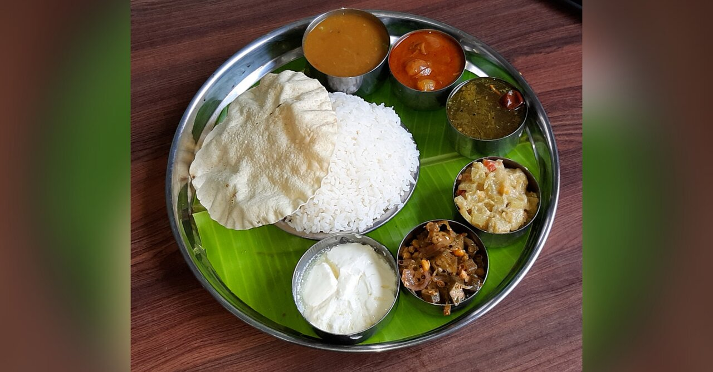

Burger
Burger is used to describe a popular sandwich made from ground meats that are formed into a patty, cooked, and placed between two halves of a bun.

Veg Meal
A meal is an eating occasion that takes place at a certain time and includes consumption of food.Meals occur primarily at homes, restaurants, and cafeterias etc..
Fried Chicken
Fried chicken, also known as Southern fried chicken, is a dish consisting of chicken pieces that have been coated with seasoned flour or batter and pan-fried etc...
Mojito
The cocktail often consists of five ingredients: white rum, sugar (traditionally sugar cane juice), lime juice, soda water, and mint.